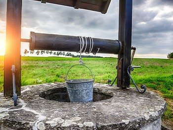
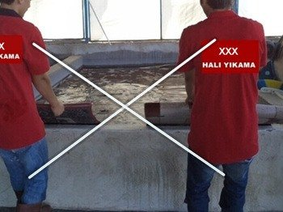

S─▒cak Su ile Hal─▒ Y─▒kama
Y├╝ksek s─▒cakl─▒k kullan─▒m─▒nda dikkat edilmesi gereken teknik detaylar.

Profesyonel Hal─▒ Y─▒kama
Kurumsal temizlik s├╝recinin avantajlar─▒ ve kalite ad─▒mlar─▒.

Hangi Hal─▒ Y─▒kamac─▒?
Doğru firma seçerken göz önünde bulundurmanız gereken kriterler.

Kuyu Suyu ile Hal─▒ Y─▒kama
Kuyu suyu kullan─▒m─▒n─▒n hal─▒ dokusu ├╝zerindeki etkileri.

Fiyatlar Nas─▒l Belirleniyor
Hal─▒ y─▒kama fiyatland─▒rmas─▒nda belirleyici olan ana etkenler.

Detayl─▒ Hal─▒ Temizli─ƒi
Derinlemesine temizlikte izlenen aşamalar ve püf noktalar.

Fason Hal─▒ Y─▒kamac─▒lar
Aracı firma riskleri ve güvenilir hizmet için dikkat edilmesi gerekenler.

Hal─▒ Y─▒kamada Havuz Sistemi
Havuz sisteminin hijyen ve performans açısından değerlendirmesi.

Teknikler
Farklı halı türleri için uygulanan profesyonel yıkama teknikleri.

Yanlış Halı Yıkama
Sık yapılan hatalar ve halı ömrünü kısaltan yanlış uygulamalar.

Leke Nedir?
Leke t├╝rleri, m├╝dahale y├╢ntemleri ve kal─▒c─▒ lekeleri ├╢nleme yollar─▒.